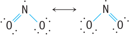

Nitrogen oxides
In virtù dei suoi possibili stati di ossidazione, l’azoto forma ben sette ossidi; di questi, N2O, NO e NO2 sono rinvenibili in concentrazioni misurabili nell’atmosfera, ma solo gli ultimi due (come detto, complessivamente indicati con NOx) sono importanti inquinanti. Il primo è incolore e inodore, l’altro è bruno-rossastro con odore soffocante (la concentrazione minima per l’individuazione all’olfatto è comunque superiore a 1 ppm).
| n.o. | formula | nomi più frequenti | |
|---|---|---|---|
| +1 | N2O | ossido di azoto(I) | protossido di azoto |
| + 2 | NO | ossido di azoto | ossido nitrico |
| + 3 | N2O3 | ossido di azoto(III) | anidride nitrosa |
| + 4 | NO2 | diossido di azoto | ipoazotide (N2O4) |
| + 5 | N2O5 | ossido di azoto(V) | anidride nitrica |
| + 5 | HNO3 | acido nitrico | |
| + 3 | HNO2 | acido nitroso | |
Two nitrogen oxides—NO, with 11 valence electrons, and NO2, with 17 valence electrons—are among a very small group of stable molecules with an odd number of electrons. Because they have an odd number of electrons, it is impossible to draw a structure obeying the octet rule; at least one electron must be unpaired. Even though NO2 does not obey the octet rule, an electron dot structure can be written that approximates the bonding in the molecule. This Lewis structure places the unpaired electron on nitrogen. Two resonance structures show that the nitrogen-oxygen bonds are expected to be equivalent.
Experimental evidence for NO indicates that the bonding between N and O is intermediate between a double and a triple bond. It is not possible to write a Lewis structure for NO that is in accord with the properties of this substance, so a different theory is needed to understand bonding in this molecule. We shall return to compounds of this type when molecular orbital theory is introduced in next sections. The two nitrogen oxides, NO and NO2, are members of a class of chemical substances called free radicals. A free radicals is a chemical species with an unpaired electron. Free radicals are generally quite reactive. Atoms such as H and Cl, for example, are free radicals and readily combine with each other to give molecules such as H2, Cl2, and HCl.
Free radicals are involved in many reactions in the environment. For example, small amounts of NO are released from vehicle exhausts. The NO rapidly forms NO2, which is even more harmful to human health and to plants. Exposure to NO2 at concentrations of 50–100 parts per million can lead to signifi cant infl ammation of lung tissue. Nitrogen dioxide is also generated by natural processes. For example, when hay, which has a high level of nitrates, is stored in silos on farms, NO2 can be generated as the hay ferments, and there have been reports of farm workers dying from exposure to this gas in the silo (because NO 2 reacts with water in the lungs to produce nitric acid). The two nitrogen oxides, NO and NO 2 , are unique in that they can be isolated, and neither has the extreme reactivity of most free radicals. When cooled, however, two NO 2 molecules join or “dimerize” to form colorless N 2 O 4 ; the unpaired electrons combine to form an NON bond in N 2 O 4.
N2O
N2O nota come protossido di azoto/anidride iponitrosa/gas esilarante. Scoperto nel 1772 da Joseph Priestley. Humphry Davy sperimentò su di sé e i suoi amici questo gas notando un effetto anestetico ed euforico, per cui decise di chiamarlo gas esilarante (laughing gas). Nelle competizioni automobilistiche è noto come NOS (Nitrous Oxide Systems) e viene iniettato nel carburatore o immediatamente a monte di esso come combruente per aumentare la potenza. Tale tecnina era in uso dall'aviazione tedesca (Luftwaffe) durante la II guerra mondaile per aumentare la potenza degli aerei. Viene usato anche come propellente per spray.
L’acido iponitroso è instabile, ed è per questo esplosivo quando è allo stato solido; l’acido nitroso, invece, non è mai stato isolato in forma pura, ma lo si adopera ampiamente in soluzione acquosa.
NO
Il composto NO è un cosiddetto radicale libero in quanto ha un elettrone spaiato e, non avendo l’ottetto completato, ha una notevole reattività chimica. Esso ha acquisito un’enorme importanza biologica da quando si è scoperto che agisce come mediatore in numerosissimi metabolismi. La sua formula esatta dovrebbe essere scritta in modo da poter evidenziare l’elettrone spaiato e, come tutti i radicali, si scrive come ⋅NO. Il termine ossido nitrico in effetti non è formalmente corretto ma ne è invalso l’uso specialmente in ambito biochimico.
Nitrogen monoxide (NO), commonly called nitric oxide, has been found to be an important regulator in biological systems. Nitric oxide is a colorless gas under normal conditions and can be produced in the laboratory by reacting 6 M nitric acid with copper metal:
8H+ (aq) + 2NO3− (aq) + 3Cu (s) ⟶ 3Cu2+ (aq) + 4H2O (l) + 2NO (g)
When this reaction is carried out in the air, the nitric oxide is immediately oxidized by O2 to reddish brown nitrogen dioxide (NO2).
Since the NO molecule has an odd number of electrons, it is most conveniently described in terms of the molecular orbital model. The molecular orbital energy-level diagram is shown in Fig. 19‐15. Note that the NO molecule should be paramagnetic and have a bond order of 2.5, predictions that are supported by experimental observations.
Since the NO molecule has one high-energy electron, it is not surprising that it can be rather easily oxidized to form NO+, the nitrosyl ion. Because an antibonding electron is removed in going from NO to NO+, the resulting ion should have a stronger bond (the predicted bond order is 3) than the molecule. This is borne out by experiment. The bond lengths and bond energies for nitric oxide and the nitrosyl ion are shown in Table 19‐15.
Nitric oxide is thermodynamically unstable and decomposes to nitrous oxide and nitrogen dioxide:
3NO(g) ⟶ N2O (g) + NO2(g)
Nitrogen dioxide (NO2), which is also an odd-electron molecule, has a V-shaped structure. The reddish brown, paramagnetic NO 2 molecule readily dimerizes to form dinitrogen tetroxide,
2NO2 (g) ⇌ N2O4 (g)
which is diamagnetic and colorless. The value of the equilibrium constant is approximately 1 for this process at 55°C, and since the dimerization is exothermic, K decreases as the temperature increases.
The least common of the nitrogen oxides are dinitrogen trioxide (N2O3), a blue liquid that readily dissociates to gaseous nitric oxide and nitrogen dioxide, and dinitro-
gen pentoxide (N2O5), which under normal conditions is a solid that is best viewed as a mixture of NO2+ and NO3− ions. Although N2O5 molecules can exist in the gas phase, they readily dissociate to nitrogen dioxide and oxygen:
2N2O5 (g) ⇌ 4NO2+ (g) + O2 (g)
| NO | NO+ | |
|---|---|---|
| Bond length (Å) | 1.15 | 1.09 |
| Bond energy (kJ/mol) | 630 | 1020 |
| Bond order (predicted by MO model) | 2.5 | 3 |
Oxoacids of nitrogen
When Nitrogen dioxide is bubbled into into cold water to form nitrous acid, HNO2 and nitric acid HNO3 form which are the only oxiacids of nitrogen. Nitric acid is a colorless liquid with boiling point 86 °C. It is a strong acid that completely ionizes in water solutions in H+ and nitrate ion NO3−. In concentraded solution is a strong oxidixin agent, and one of the most important industrial acid (the other HCl and H2SO4). It is also utilized in the production of fertilizer such as KNO3, Ca(NO3)2 and NH4NO3.
With a fairly high standard potential (E°NO3−/NO = 0.96 V), nitric acid is capable to oxidize Cu and Ag, reducing itself to NO as follows
2NO3− + 8H3O+ + 3Cu ⟶ 2NO + 12H2O + 3Cu2+
Nitrous acid HNO2 is a weak acid with Ka = 4.5 ⋅10−4 and it exists only in solution but it has not been isolated as a pure compound. In solutions it decomposes as follows
3HNO2(aq) ⇌ H3O+ + NO3− + 2NO
The nitrous acid, is a strong oxidixing agent
HNO2(aq) + H+ (aq) ⇌ NO(g) + H2O(l) E° = +1V
The rate at which nitrous acid oxidizes is increased by acid as a result of its conversion to the nitrosonium ion, NO+:
HNO2(aq) + H+ (aq)⇌ H2NO2+(aq) ⇌ NO(g) + H2O(l)
The nitrosonium ion is a strong Lewis acid and forms, complexes rapidly with anions and other Lewis bases.